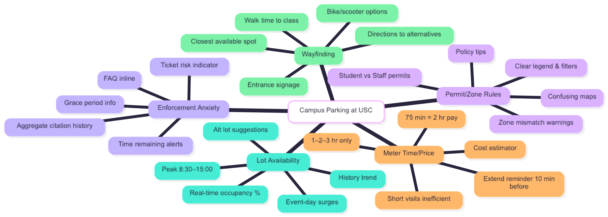

Highlighted projects
- Personal Portfolio Website
- Intro Programming Assignments
Problem Statement

Many USC campus meters only allow whole-hour purchases (1–2–3 hours), so a 75-minute class forces students to pay for two hours or risk a ticket, making short visits costly and inefficient during peak hours.
Affinity Diagram (PM3)
Groups the campus-parking problem into themes (lot availability, meter time/price mismatch, permit/zone rules, wayfinding to alternatives, and enforcement anxiety) to guide solution scope and next-step prototypes.
Sketches (PM4)
Three low-fidelity sketches for the parking helper app. This page shows the “Map & Alternatives” screen; the PDF includes all three: Map & Alternatives, Meter Time/Price, and Alerts/Timer.
Code Samples (PM5)
Download a ZIP with my C++ assignment code (Program 5). Includes sources and build notes.
Direct sources (optional): heightrange.h · heightrange.cc